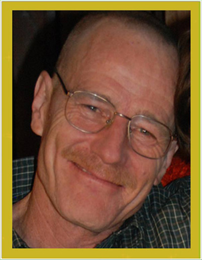
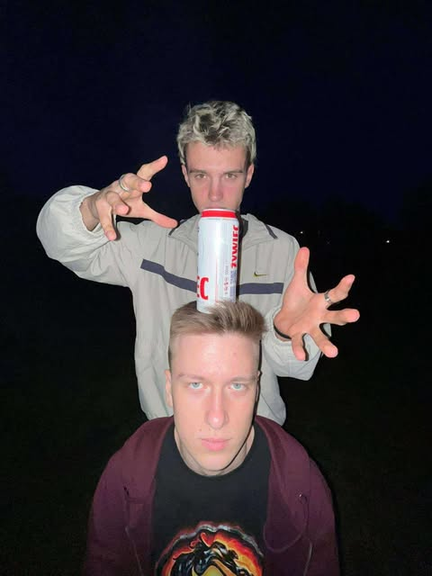

Miły
Przyjaciel, Bliźniak & Najlepszy Glutek
- 
- 

Ten ziomal to legenda. Śmieszny, super fajny i tak miły, że lekarz
postawił diagnozę: miloza (najrzadsza choroba – 100% serdeczności).
Zawsze w duecie, bo przecież jest Bliźniakiem – jak Batman i Robin,
tylko w wersji „Glutek i Gluteczek”.
A gdy trzeba coś niechcący upuścić? Top 1 w fumblowaniu torby.
Nikt nie robi tego tak stylowo jak Miły.
Kiedy pojawia się w pokoju, poziom uśmiechu wzrasta o 200%.
Kiedy mówi „elo”, plotki milką z zazdrości. A kiedy przytula, nawet czajniki
przestają gwizdać ze stresu.
Miły to taki typ, co ma w kieszeni żelki, w sercu dobro i w głowie memy
najwyższej jakości. Glutek – ale premium, edycja kolekcjonerska.


Plot twist: Miły jest też specjalistą od życiowej chemii – łączy ludzi lepiej niż wi-fi. Reakcje? Zawsze pokojowe. Efekt uboczny kontaktu z Miłym: śmiech, lepszy dzień i ochota na naleśniki.
W szkole znany jako „Najmilszy ziutek”. Nauczyciele go lubią, bo oddaje uśmiech na czas, a znajomi – bo przypomina, że bycie dobrym to najlepszy flex. Nie gra w futbol? Spoko. Za to jego żonglerka żartami ma ligę mistrzów.
Ostatnio jednak lekarze powiedzieli: „to jest miloza w stanie zaawansowanej serdeczności” – i potrzebna jest terapia śmiechem, memami i wsparciem od ekipy. A ekipa to właśnie my. I Ty. I każdy, komu choć raz Miły poprawił humor.
Czy to poważne? Tak! Poważnie kochamy Miłego i poważnie chcemy, żeby nadal rozsiewał dobro w wersji XXL. Dlatego organizujemy akcję ratunkową: Operacja Miłość dla Miłego. Każdy grosz, każdy udostępniony link i każdy żart na czacie – wszystko się liczy.
Jaki wspaniały mamy Glutek!
Ale potrzebuje naszej ekipy.
To miloza (skrajna serdeczność).
Dawka uśmiechu potrzebna natychmiast!
Aby pomóc, dorzuć się do Funduszu Miłości,
wyślij dobre wibracje i trzymaj kciuki za Miłego!

KAŻDA ZŁOTÓWKA TO +10 DO UŚMIECHU!
Licznik ziomków na stronie:
[tu może być Twój bezpieczny licznik]